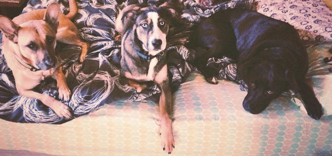

Mans Best Friend
To put it bluntly, this whole website will be about my top 5 favorite dogs of all time. Often referred to as “Man’s best friend”, dogs hold a special place in our hearts. They provide unconditional love, companionship, entertainment, reduce stress levels, as well as hold a variety of different jobs in therapy, police, rural/agricultural, even bomb-sniffing.
But aside from the great things they do in our society, there's something extra special about the dogs in your own life. Right now, you’re probably imagining your own little furry friend's face in your mind, or maybe you're staring at them right now. No matter what kind of pet we have we love them all the same, so to that end, I thought I’d share some of my favorite four-legged friends and what made them special.
I’ve had a lot of dogs come and go in my life, but I’ve narrowed it down to my top 3. I’ve included a few pictures of each dog, as well as a link to their own page. I hope you enjoy!